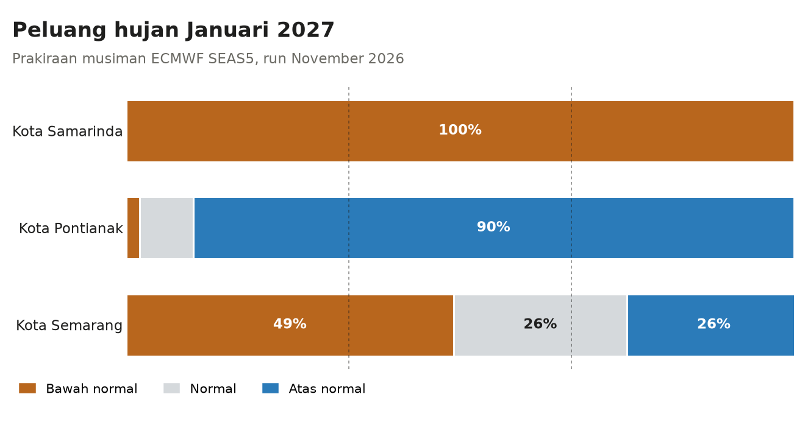
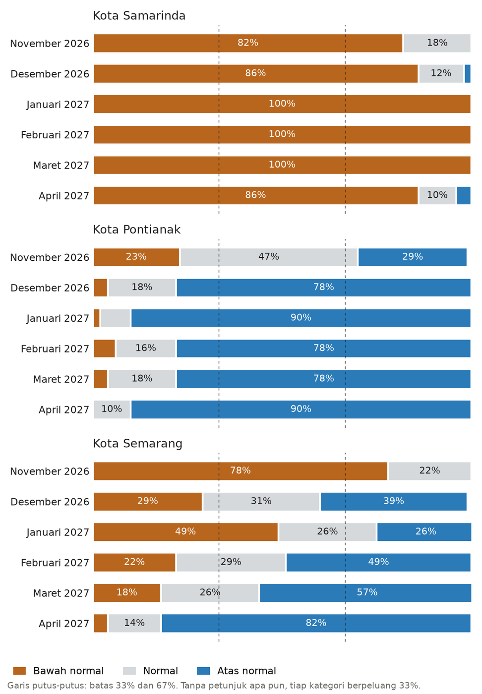
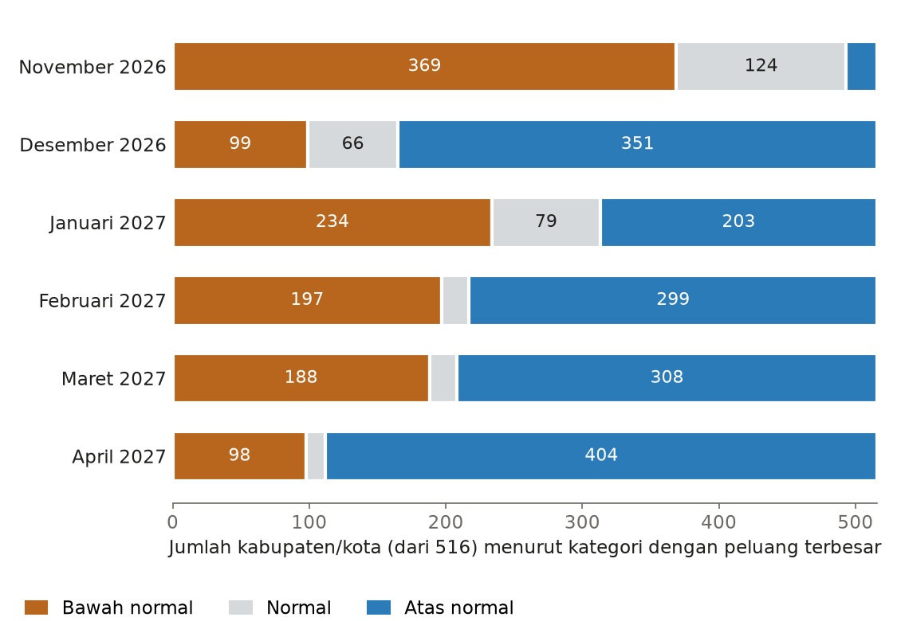

Daftar isi
Prakiraan musiman ECMWF yang diolah HESLab untuk Januari 2027 menyebut peluang hujan bawah normal di Kota Samarinda 100%, sedangkan di Kota Pontianak peluang hujan atas normal 90%. Di Kota Semarang angkanya 49%, 26%, dan 26%. Apa arti angka-angka itu? Apakah 100% berarti Samarinda pasti kering? Tulisan ini menjelaskan cara membaca peluang hujan musiman, memakai run SEAS5 November 2026 yang tampil di Climate Outlook HESLab Portal.

Tiga kotak yang sama besar
Prakiraan musiman tidak menjawab "berapa milimeter hujan bulan depan". Yang dijawab adalah: hujan bulan itu lebih mungkin jatuh di kotak mana dari tiga kotak berikut.
- Bawah normal: termasuk sepertiga tahun terkering.
- Normal: termasuk sepertiga tahun di bagian tengah.
- Atas normal: termasuk sepertiga tahun terbasah.
Batas ketiga kotak dihitung dari catatan model itu sendiri. Untuk tiap kabupaten/kota, bulan, dan jarak prakiraan, HESLab mengambil hindcast SEAS5, yaitu prakiraan ulang untuk tahun 1991–2020 dengan 25 member per tahun, lalu membaginya menjadi tiga bagian sama banyak. Karena itu, tanpa petunjuk apa pun, setiap kotak berpeluang 33%. Angka 33% inilah pembandingnya: peluang 40% atas normal hanya sedikit lebih condong ke basah, sedangkan peluang 80% sudah condong kuat.
"Normal" di sini berbeda dengan "normal" pada laporan hujan dasarian HESLab, yang memakai rentang 85–115% dari normal hujan satelit GSMaP 1999–2025. Yang pertama dihitung dari model, yang kedua dari hujan yang sudah turun.
Dari mana angka 70% atau 100%
SEAS5 (sistem prakiraan musiman ECMWF) tidak dijalankan sekali, melainkan 51 kali dengan kondisi awal yang sedikit berbeda. Setiap jalannya disebut member. Peluang adalah bagian dari 51 member itu yang hujannya jatuh di kotak tertentu.
| Kota, Januari 2027 | Bawah normal | Normal | Atas normal | Hujan rata-rata member | Rata-rata hindcast 1991–2020 |
|---|---|---|---|---|---|
| Kota Samarinda | 100% | 0% | 0% | 113 mm | 280 mm |
| Kota Pontianak | 2% | 8% | 90% | 411 mm | 298 mm |
| Kota Semarang | 49% | 26% | 26% | 384 mm | 413 mm |
Di Samarinda, kelima puluh satu member menghasilkan hujan Januari di bawah batas bawah normal. Di Pontianak, 46 dari 51 member berada di atas batas atas normal. Di Semarang, member tersebar di ketiga kotak. Hampir separuhnya di bawah normal, tetapi separuh lainnya di normal atau atas normal, sehingga prakiraan untuk Semarang pada bulan itu tidak memberi petunjuk yang kuat.
Karena jumlah member 51, peluang selalu bergerak dalam langkah sekitar 2%.
Enam bulan ke depan
Run November 2026 menjangkau November 2026 sampai April 2027. Pola tiap kota bisa berubah dari bulan ke bulan.

- Samarinda condong ke bawah normal sepanjang enam bulan, dengan peluang 100% dari Januari sampai Maret.
- Pontianak hampir seimbang pada November, lalu condong kuat ke atas normal dari Desember sampai April.
- Semarang condong ke bawah normal pada November, nyaris tanpa arah pada Desember dan Januari, lalu makin condong ke atas normal menjelang April.
Untuk seluruh Indonesia, kategori dengan peluang terbesar berganti dari bulan ke bulan. November didominasi bawah normal (369 dari 516 kabupaten/kota), Desember berbalik ke atas normal (351), Januari terbelah, dan April paling seragam ke atas normal (404).

Latar belakang iklimnya, yaitu El Niño dan IOD, dibahas di artikel El Niño mendekati puncak, IOD menuju netral.
Yang tidak dikatakan oleh angka peluang
Peluang 100% bukan kepastian. Angka itu berarti semua member SEAS5 menunjuk ke kotak yang sama. Namun seluruh member berasal dari satu model, sehingga kesalahan yang sama bisa terbawa ke semuanya. Peluang besar menunjukkan model sangat yakin, belum tentu model tepat.
Peluang tidak menyebut besarnya kekurangan atau kelebihan. Peluang 90% atas normal di Pontianak tidak berarti hujannya 90% lebih banyak. Untuk besarnya, lihat hujan rata-rata member dibanding rata-rata hindcast: 411 mm terhadap 298 mm, sekitar 38% lebih banyak.
Makin jauh bulannya, makin perlu hati-hati. Kemampuan prakiraan musiman umumnya menurun dengan lead time, yaitu jarak antara awal run dan bulan yang diprakirakan. Run November 2026 justru paling "yakin" untuk April 2027, bulan yang paling jauh. Peluang yang besar pada bulan yang jauh sebaiknya dibaca sebagai arah, bukan angka pasti, dan diperiksa lagi pada run bulan berikutnya.
Satu wilayah diwakili sel sekitar 110 km. Hujan tiap member dirata-rata dari sel grid 1° yang menutupi kabupaten/kota itu. Kota kecil di lereng gunung dan kabupaten luas di dataran rendah bisa berada di sel yang sama. Angkanya juga belum dikoreksi ke hujan teramati, dan akurasi prakiraan per wilayah belum diuji oleh HESLab.
Cara memakainya
- Bandingkan peluang dengan 33%. Di bawah sekitar 40%, anggap prakiraan tidak memberi arah.
- Lihat beberapa bulan sekaligus. Pola yang konsisten, seperti Samarinda atau Pontianak, lebih berguna daripada satu bulan yang menyendiri.
- Periksa run berikutnya. SEAS5 terbit sekitar tanggal 5 setiap bulan; bila arahnya bertahan, keyakinannya bertambah.
- Untuk keputusan resmi, seperti jadwal tanam atau pengaturan waduk, tetap rujuk prakiraan musim dari BMKG. Prakiraan ini adalah bahan kajian riset.
Peta peluang per kabupaten/kota untuk keenam bulan bisa dibuka di Climate Outlook HESLab Portal: klik satu wilayah untuk melihat peluang ketiga kotak dan hujan rata-rata member.
Data
- ECMWF SEAS5 (sistem 51), prakiraan musiman bulanan, run November 2026, 51 member, melalui Copernicus Climate Change Service (C3S) Climate Data Store. https://cds.climate.copernicus.eu/datasets/seasonal-monthly-single-levels
- Batas tercile: hindcast SEAS5 1991–2020, 25 member per tahun, per kabupaten/kota, bulan awal, dan lead.
- Diolah HESLab: rata-rata per kabupaten/kota menurut luas sel 1° di dalam wilayah.